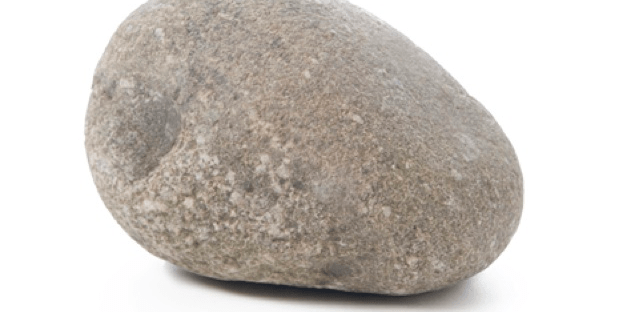

¿Quieres saber más sobre nosotros?
Somos un muy pequeño grupo que está conformado por 3 personas los cuales somos:

Agente D:
Aunque por fuera tenga un aspecto tenebroso y oscuro, por dentro es alguien que se preocupa de todos sus aliados, como si fueran sus hijos propios. El Capitán tiene muchos años ya de servicio, algunos dicen que ya lleva más de 100 años de servicio (aunque en verdad no es así), es una persona muy inteligente y precavida, tambiñen tiene unos dotes increibles para comandar siempre a la victoria, en todos los años de servicio solo ha perdido una vez y esa vez aún no logra perdonarsela....

Agente J:
Aunque por fuera tenga un aspecto tenebroso y oscuro, por dentro es alguien que se preocupa de todos sus aliados, como si fueran sus hijos propios. El Capitán tiene muchos años ya de servicio, algunos dicen que ya lleva más de 100 años de servicio (aunque en verdad no es así), es una persona muy inteligente y precavida, tambiñen tiene unos dotes increibles para comandar siempre a la victoria, en todos los años de servicio solo ha perdido una vez y esa vez aún no logra perdonarsela....
Agente S:
Un soldado de primera clase que fue entrenado desde que era un niño por El Capitán, este fue encontrado cuando era tan solo un bebé, debajo de unos escombros luego de finalizar la guerra en una ciudad lejana. Ha jurado lealtad al Capitán ya que para el, Él Captán es como su padre, el es la única figura paterna que ha tenido.
Luego de haber conocido un poco más de nosotros, nos queda decir que a pesar de que somos un grupo pequeño, poco a poco iremos creciendo, a medida que nuestro proyecto avance nuestro grupo de trabajo también irá creciendo.
Maracaibo Venezuela